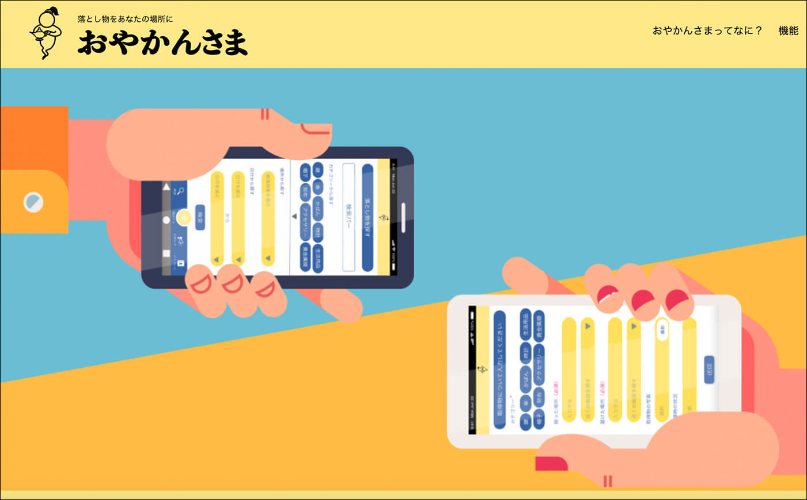
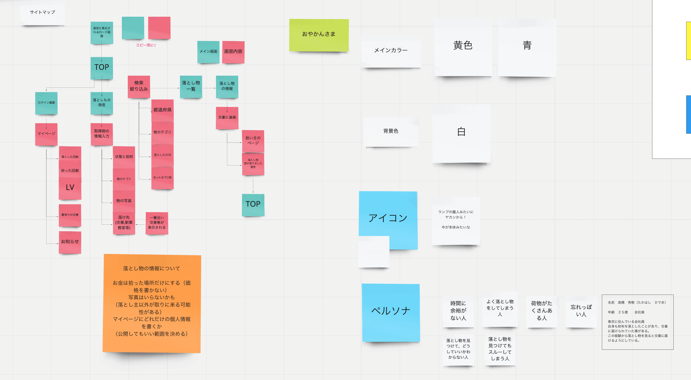
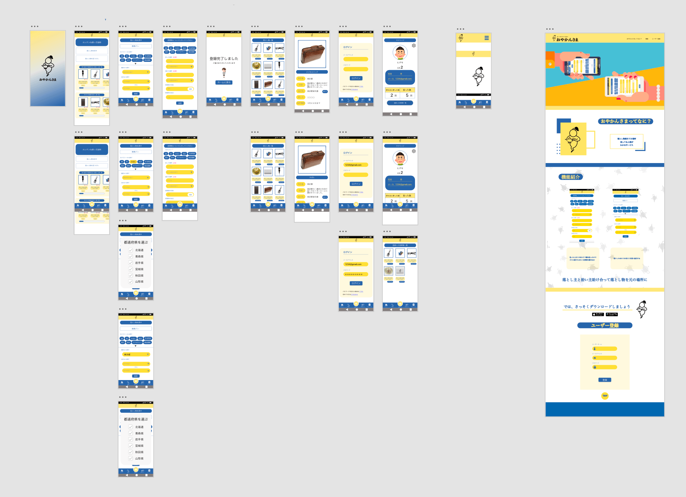
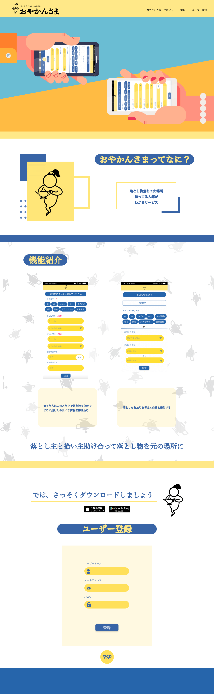

おやかんさま
作成期間
3日間
使用技術
XD
HTML+CSS
作品について
３月に行われた５校での合同制作合宿で制作した作品になります。このイベントは集まった5校の人数の中から4人を選び一チームとし、チームで作品を作るというイベントです。期間は3日間で最後には全体で発表がありました。テーマは「場所」になります。アイデア出しから制作まで行いました。私は主にXDのデザイン、プロトタイプ、紹介サイトのコーディングを担当しました。
1.アイデア出し
初めて会った4人ですが、時間もないので自己紹介も程々に早速制作に取り掛かりました。場所というものから連想する言葉でアイデア出しを始めました。4人それぞれ思いついた場所と関係する単語を並べました。つぎに並べられた単語から、自分が思いついたサービスを全体に共有しました。サービスとそのサービスがどういう目的なのかを記録しました。最後に出されたアイデアから多数決で作る落とし物に関するアイデアに決定しました。
決まったアイデアは落とし物を元の場所に返すというコンセプトのアプリになりました。拾った人と落とした人を繫げるための作品になります。アプリのおやかんさまという名前は、失せ物探しのおまじないである「おやかんさま」からそのまま採用しました。
次に決定したアイデアからどのような機能が必要なのかを話し合いました。アプリとして成立させるためには何が必要なのかを話し合いながら、メモとして貼り付け、まとめました。またアプリとして考えたときにアプリの画面として必要な部分を青色、アプリの機能として必要な部分を赤色にしています。矢印はアプリの動きになります。同時にアプリのデザイン、ペルソナについても話し合いました。アイデアが形になったので次にXDでデザインを始めました。
2.デザイン
4人の内、3人がプログラマー希望で、1人がデザイナー志望だったため、デザイナー志望の方にアイコンのデザインを依頼し他の三人でアプリのデザインを始めました。私は主にトップとプロフィールをデザインしました。デザイン中も他の担当のところでアイデアがあったら提案してお互いに修正しながらのデザインになりました。アイコンが完成した後はデザイナーの方が全体を直していきました。
ここで、私以外の二人がアプリの制作に取り掛かりました。時間的にアプリの完成はできないためアプリはできるところまでとし、私はXDでアプリの動きを再現するためにプロトタイプを作ることにしました。アプリ上の動きと下にタブバーの動きもつけました。このとき、スクロールする場所としない場所の設定もおこない、XD上でアプリの動きを再現しました。
3.紹介サイト
XD完成後、紹介サイトを作ろうという話になり、二人はアプリの制作を行っていたので、デザイナーの方と一緒にアプリの紹介サイトを作ることに決まりました。時間が無かったのでデザインとコーディングを同時に行う形でコーディングをしました。XDは共有してあるのでデザイナーの方がデザインしたところを追うようにコーディングをしていきました。下の画像はデザインになります。サイト自体は こちら から飛ぶことができます。
紹介サイトの機能はヘッダーはfixdで固定してあります。ファーストビューには一枚の画像を設定してあります。次にアプリの説明と機能の紹介が書いてあります。最後にストアへのボタンと、アプリがユーザー登録をすることを想定しているため、サイトにもユーザー登録の為にフォームを設置してあります。